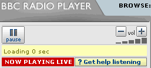

Install Graphics Version (FFox 1.5 + GM 0.6.4 Only): Right Click here and select "Install User Script"
Install Text Version (FFox 1.5 + GM 0.6.4 Only): Right Click here and select "Install User Script"
The aim of this script is to give a user more navigation controls in the BBC Radio Player.
Most Shows have only +5 and +15 minute buttons, this script adds -1, -3, -15, +1, +3, +15 minute links
* - Most Radio 5 Live and BBC 7 already have these, I could exlude these in the script, but have left them in incase there aren't any controls on a certain show. Maybe I will change the script to detect if a control is present and only show it if not.
NB:I have also made another script to let you play archived content in an external player.
It just manipulates the Real Player plugin throguh Javascript commands.
Version 0.2 replaces the div that holds the plugin and controls with alternative ones. The BBC page actually contains the extra controls
but only allow you to use them if using a "speech" station. Now you have these options for all stations. It doesn't alter "live" or "speech" stations.
GreaseMonkey is an extension for Mozilla Firefox.
I Found Dive Into Greasemonkey very useful in learning how to make Greasemonkey scripts.
Graphics Before & After
Text Before & After

Before & After
Any Comments then email me @
Install Graphics Version (FFox 1.5 + GM 0.6.4 Only): Right Click here and select "Install User Script"
Install Text Version (FFox 1.5 + GM 0.6.4 Only): Right Click here and select "Install User Script"
Version 0.22
----------------------------
9th December 2005 PM
-----------------------------
Minor Fixes:
Fixes for Firefox 1.5 & Greasemonkey 0.6.4, Not officially supported by older versions of Firefox or Greasemonkey.
-----------------------------
Version 0.21
----------------------------
7th July 2005 PM
-----------------------------
Minor Fixes:
Adds volume level indicator image to both versions
Fixes text version not showing running time info
-----------------------------
Version 0.2
----------------------------
7th July 2005 PM
-----------------------------
2 Options now available: text + graphics
Graphics: Replaces existing controls with -15, -1, +1, +15 mins buttons
Textual: As above but with -15, -5, -3, +1, +3, +15 and text not graphics
-----------------------------
Version 0.1
----------------------------
7th July 2005
-----------------------------
Initial release